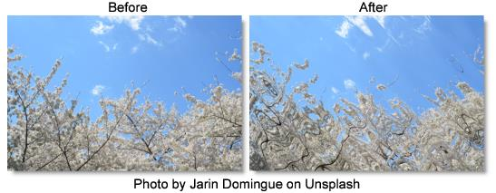

S_WarpWaves2
Description
Warps the image using two sets of overlapping wave patterns.
The S_WarpWaves2 filter comes from the Emmy award winning Boris FX Sapphire filter set.
Category
Lens/Distort.
Controls
Presets
To select a preset, pick one from the Presets window.
A Waves / B Waves
Amplitude
The amount of distortion.
Frequency
The frequency of the waves. Increase for more waves or decrease for fewer.
Angle
The rotation angle of the wave pattern in degrees.
Displace Angle
The warping direction in degrees relative to the angle of the waves. 0 produces compression-expansion waves, while 90 creates side to side waves.
Phase Start
The phase shift of the waves.
Z Dist
Scales the distance of the image. Values greater than 1 move it farther away and make it smaller. Values less than 1 move the image closer and enlarge it. Zooming in slightly can sometimes be used to hide edge artifacts.
Wrap X & Y
Determines the method for accessing outside the borders of the image.
No
Renders black beyond the borders.
Tile
Repeats a copy of the image.
Reflect
Repeats a mirrored copy. Edges are often less visible with this method.
Filter
If enabled, the image is adaptively filtered when it is resampled. This gives a better quality result when parts of the image are warped smaller.
Crop Input
These 4 parameters, Crop Top, Crop Bottom, Crop Left, and Crop Right, allow selecting a rectangular subsection of the image to be processed. If the Wrap parameters are set to No, the exposed borders will be transparent. If the Wrap is Tile or Reflect, the image is wrapped on the new cropped borders to fill the frame. This can make it easier to avoid artifacts due to distorting an image with bad edges.